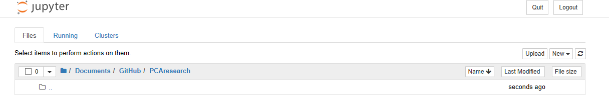
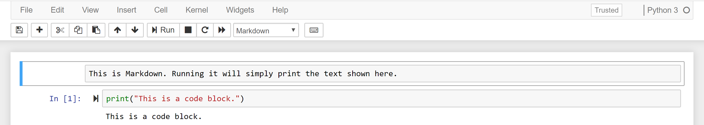

GETTING STARTED
Starting Up Jupyter Notebook
To use the Jupyter notebook, you have to run the following command (in either Terminal for Mac or Command Prompt for Windows) to see the application in your web broswer:
jupyter notebook
You can also launch it through the Anaconda Navigator startup page.
Once open you will be greeted with the dashboard:

- The “Files” tab is where all of your files are kept,
- The “Running” tab keeps track of all the processes and notebooks currently live, and
- The “Clusters” tab is provided by IPython Parallel, Python’s parallel computing framework.
Creating a New Notebook
To open a new notebook, you can click on the “New” in the “Files” tab and choose the kernel you would like to use.
The main user interface for the notebook looks like this: 
Note how the Markdown cell is within a blue frame. This means that the cell is in command mode, which lets you modify the notebook as a whole. If you double-click on the cell or hit Enter you will enter edit mode, which lets you edit the contents of the cell itself. Note that in command mode, the keyboard changes so letter keys correspond to shortcuts. In this case, however, you can add or format text in the Markdown to give better explanation for the code.
Common formatting syntax include:
- Bookending text with
*will make it * italic * - Bookending text with
**will make it ** bold ** - Adding
#in front of a line will make it a header (##will make a secondary header,###will make a tertiary header, etc. - To apply LaTeX in your markdown, you can bookend your equation with $
($...$)like $c =\pi$
You can find more markdown code in this markdown cheatsheet.
Additionally, for code cells you can use the following shortcuts:
- Add a new cell by looking under the the “Insert” tab or pressing
Bwhen in command mode - Delete a new cell by using the “Edit” tab or by pressing
D, Dwhen in command mode - Hit
shift + tabafter typing out a function to get a description of how it works - After finishing a cell, hit
shift + enterto run it
When running code, the number next to the cell signifies the order in which the code has been run. Thus, you can have situations where you can run a cell near the beginning of your notebook that will overwrite a variable you declared in a later cell.
Once you’re done with your notebook, you can export it to html to contribute it to the project using the following command:
jupyter nbconvert --to html --template basic [your notebook's title].ipynb
Creating a Book
If you have a collection of notebooks you want to share with students, you can create a Jupyter Book that organizes them all in a single hub and narrative structure. To do so, first install the Book CLI using the jupyter command line. Specifically, run the following command:
pip install jupyter-book
Then create your book by navigating to the directory you would like to create your book in and using the following line (replacing “yourbookname” with whatever you would like to name the book):
jupyter-book build yourbookname
Once made, you will see that the book generates many different folders and files. The main components to be concerned about are the content folder and the files named _config.yml and /_data/toc.yml. Content is where you put all of notebooks you create, and then toc.yml is the table of contents, which needs to be updated once all of the desired content is in the folder. For example, the following table of contents is for a book chapter called “Features”:
- title: Features
url: /features/features
not_numbered: true
expand_sections: true
sections:
- title: Markdown files
url: /features/markdown
not_numbered: true
- title: Jupyter notebooks
url: /features/notebooks
not_numbered: true
The file _config.yml is for customizing different aspects of your book, such as the title, logo, interactive buttons. Lastly, since notebooks are built using different environments, you may want to specify the packages required to run your book. To do so, update the requirements.txt file in the main directory. For more details and customization options, visit the Jupyter book guide.
Once all of the content is in place and everything is configured, you can create the Markdown in your book by running the following command:
jupyter-book build yourbookname/
which will take the chapters you outlined in the toc.yml file and automatically organize the notebooks for you. From there, you can ultimately build the html for your book, which will prepare it for the web, through one of two ways:
- Build your site on Github by simply opening the directory you created your book as a repository and then telling Github to build a site from your repository.
- Build your site locally so that you can preview the results before pushing it online. Doing this however will require a third-party application (namely: Docker, Singularity, or Ruby).